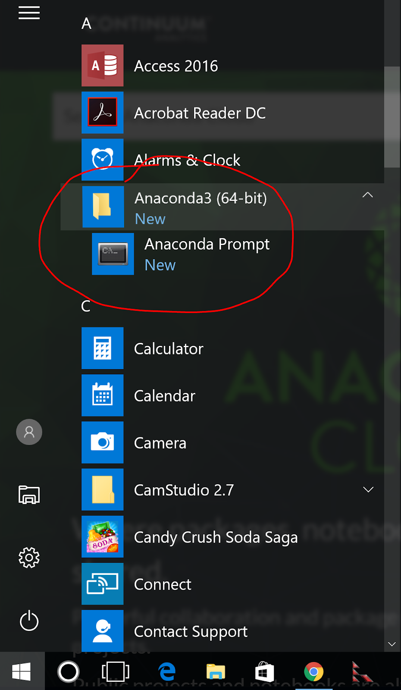
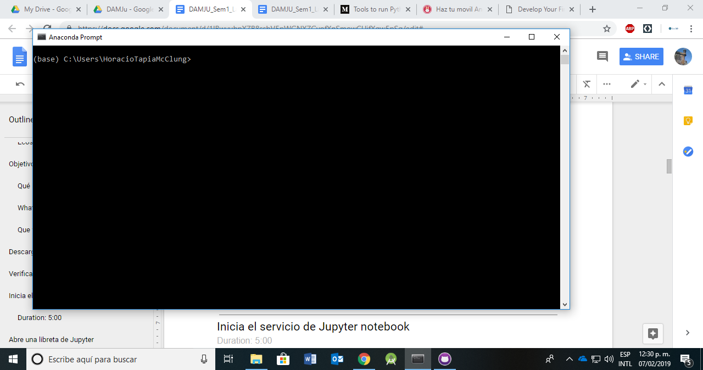
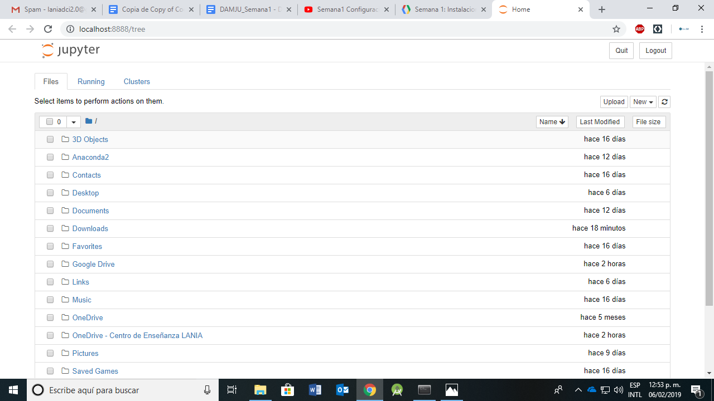
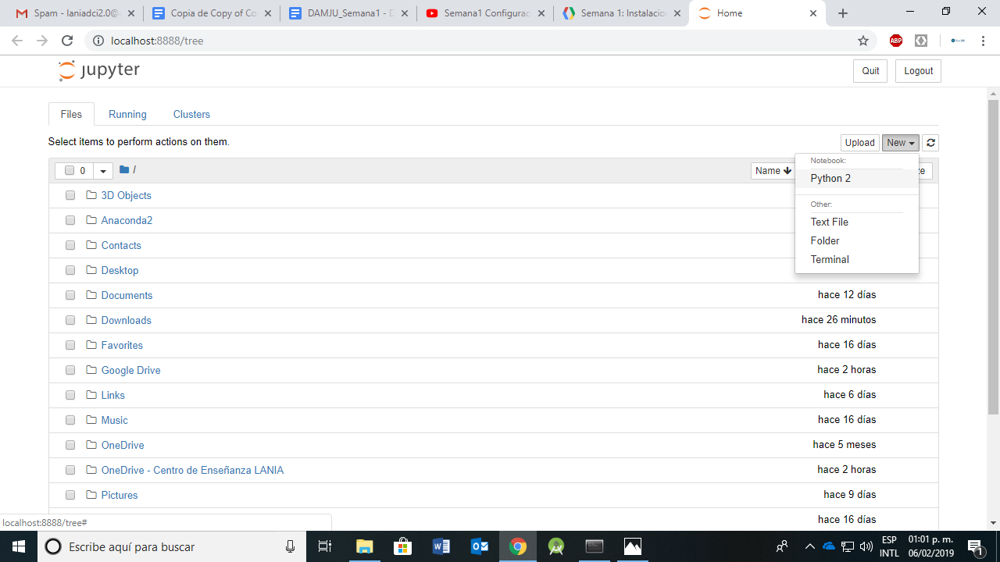
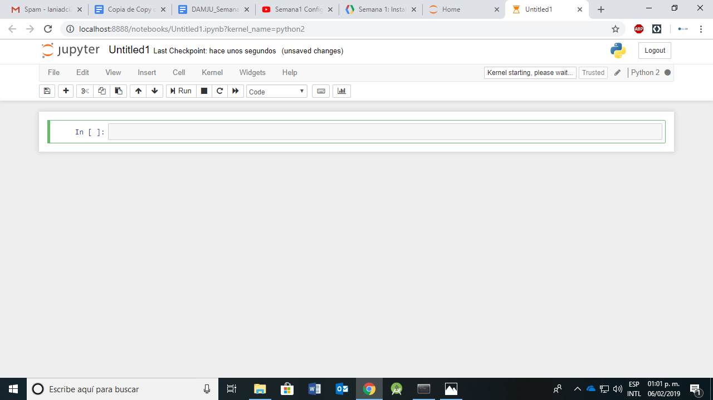

El veloz desarrollo de Python y el ecosistema de Jupyter, en parte por su popularidad para desarrollo de aplicaciones de Ciencias de Datos y Machine Learning, ha generado un amplio espectro de servicios externos que ofrecen una configuración completa a un precio muy accesible. En particular una de ellas el Google Colaboratory, un sistema que ofrece un ambiente completo y gratuito de Jupyter para el desarrollo de aplicaciones de bajo, medio y alto nivel.
El veloz desarrollo de Python y el ecosistema de Jupyter, en parte por su popularidad para desarrollo de aplicaciones de Ciencias de Datos y Machine Learning, ha generado un amplio espectro de servicios externos que ofrecen una configuración completa a un precio muy accesible. En particular una de ellas el Google Colaboratory, un sistema que ofrece un ambiente completo y gratuito de Jupyter para el desarrollo de aplicaciones de bajo, medio y alto nivel.
Con este servicio reducimos la complejidad de gestionar y administrar una infraestructura de software y hardware. Es posible utilizar dicha infraestructura como reemplazo parcial de las libretas tradicionales (como la que usaron en la sección anterior), sin embargo, no podemos prescindir de la instalación local de Jupyter si queremos hacerlo.
En este paso vamos a utilizar la infraestructura de la nube de Google para ejecutar las libretas utilizando dicha tecnología, pero cuando necesitemos comunicarnos con el dispositivo móvil, usaremos el entorno de ejecución local que ya tenemos configurado.
Desafortunadamente las libretas en la nube de Google no son persistentes y el servicio cancela cualquier cálculo que dure más de 12 horas. Sin embargo nos permitirán desarrollar aplicaciones que de otra manera no podríamos generar con un costo mínimo (por ejemplo usaremos TensorFlow en un GPU sin costo alguno para entrenar un algoritmo de clasificación).
- Configurar el entorno de libretas de Jupyter disponible en la nube en Google Colaboratory para ejecutarse usando el entorno local instalado previamente
Qué haremos
Vamos configurar el entorno de Jupyter disponible en la nube de Google para ejectuar con el entorno local de Anaconda |
|
What you'll learn
- Cómo instalar y configurar Jupyter en una computadora personal
- Como configurar el sistema para conectarse al dispositivo móvil
- Como interactuar con el dispositivo móvil usando Python
Que vamos a necesitar
- Una computadora personal con Anaconda instalado localmente
- Conexión a internet
- Una cuenta de Google
Primer paso
Accede a la infraestructura con el siguiente botón.
Si es necesario, ingresa tu información de usuario de Google. Una vez que hayas ingresado verás una pantalla como la siguiente:

En ésta ventana pueden elegir una libreta previamente existente o abrir una desde un repositorio en Google Drive o en Github o por medio de un URL. Selecciona NUEVO CUADERNO DE PYTHON 3 en la parte inferior derecha o CANCELAR. Esta última acción te mostrará una libreta con ejemplos. Se sugiere revisar para familiarizarse un poco con el sistema.

Para poder ejecutar comandos de Python en Android usaremos una tecnología que permite acceder a la mayoría de las funcionalidades de Android a través de fachadas.
Los pasos siguientes tienen que realizarse en el dispositivo móvil. La instalación es muy sencilla y automática.
Descarga el software de SL4A
Captura la siguiente imagen con la cámara de tu dispositivo para descargar el Scripting Layer For Android

Instala sl4a
Para instalar el software debes tener habilitada la opción de permitir instalación de software externo bajo la configuración de opciones de desarrollador del dispositivo.
Ejecuta el programa que descargaste y sigue las instrucciones en la pantalla del dispositivo.
Descarga el software de Python
Captura la siguiente imagen con la cámara de tu dispositivo para descargar Python for Android
Instala python
Para instalar el software debes tener habilitada la opción de permitir instalación de software externo bajo la configuración de opciones de desarrollador del dispositivo.
Ejecuta el programa que descargaste y sigue las instrucciones en la pantalla del dispositivo. El programa descarga archivos adicionales y completa la instalación.
Inicia el servicio de Python en el dispositivo móvil
Abre la aplicacion SL4A identificada por el icono

en la pantalla de tu dispositivo. Del menú navega a Preferences->Server Port y escribe 2222 en la caja correspondiente.
Después regresa al menú y navega a View->Interpreters, nuevamente menú y elige Start Server. El servicio Público permite comunicarse con el dispositivo vía WiFi. Elige iniciar un servicio Privado y conecta tu dispositivo a un puerto USB de tu computadora.
Vamos a revisar que localmente podemos identificar el dispositivo y que podemos comunicarnos con él a través del servicio de Python. Con el dispositivo conectado a un puerto USB de tu computadora, escribe lo siguiente en la ventana de comando:
>adb devicesEl resultado de dicha instrucción debe dar información sobre el dispositivo conectado a la computadora, por ejemplo
List of devices attached
98f2eeee deviceSi el comando no regresa información revisa la conexión del dispositivo al puerto USB y asegurate que está autorizado por el sistema para comunicarse con la computadora. Después escribe
Utiliza el enlace siguiente para la descarga de Anaconda la versión de Python 2.7 apropiada para tu sistema operativo.
Ejecuta el programa que acabas de descargar y sigue las instrucciones de instalación.
En Windows, abre el menú de sistema y localiza el folder Anaconda2. Selecciona Anaconda Prompt y espera un momento. Una nueva ventana se abrirá donde pueden ingresar instrucciones. Si tu sistema operativo es alguna variante *NIX abre una terminal (consola). |  |
Una ventana nueva con la consola de anaconda deberá hacerse visible en tu pantalla. |  |
En la ventana que se abrió (o en la consola si no estás usando Windows), escribe el siguiente comando:
jupyter notebookDespués de unos minutos deberá abrirse una nueva ventana en su navegador de preferencia apuntando a la dirección http://localhost:8888. Si no se abre de manera automática utiliza el enlace anterior.
En su navegador verás algo similar a la imagen. Esta es la ventana inicial de la aplicación Jupyter Notebooks. Toma unos minutos para conocer el ambiente y familiarizarte con el contenido. Observa que en primer nivel tienes lo que es básicamente un navegador de archivos. |  |
En la ventana del navegador mostrando el árbol de documentos, busca el siguiente botón cerca de la esquina superior derecha:
Selecciona New y después Python 2

Esta acción abrirá una nueva pestaña con una libreta de Jupyter en blanco como la que se muestra en la siguiente imagen
El recuadro que aparece color verde con el texto In [ ] es una celda de código. Escribe el código siguiente en la celda y cuando termines presiona simultáneamente las teclas Alt+Enter
import sys
sys.platformAl ejecutar el código, el intérprete debe mostrar una línea con información del sistema operativo sobre el que se ejecuta la aplicación (win32, posix, linux, etc.). Si lograste ver el resultado, felicidades, has terminado la primera parte de la configuración de nuestro sistema.
El módulo android.py es necesario para poder invocar objetos en Python que puedan acceder a la API de Android. A continuación están los enlaces donde podrás descargar los programas, sin embargo, haremos la configuración vía las libretas de Jupyter con el fin de familiarizarnos con el sistema y tener una evidencia de evaluación de los avances de la semana.
Presiona el siguiente botón para acceder a la libreta de Jupyter que contiene las instrucciones para instalar el módulo en tu sistema.
Enlaces al módulo android.py para descarga local
En caso de tener problemas para ejecutar las instrucciones anteriores, abajo encontraran los enlaces para descargar los modulos.